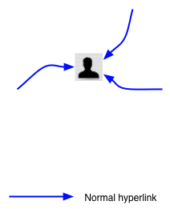
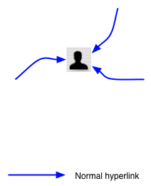

#AyoSinau Java Itu Mudah
Iesa Luthfy Maliek
skype: iesa.maliek
iesamaliek@gmail.com
www.sinauacademy.com
facebook.com/groups/sinauacademy
Perkenalkan
- Iesa Luthfy Maliek
- S1: Teknik Informatika UPN 'Veteran' Yogyakarta
- S2: Ilmu Komputer Univ. Budi Luhur Jakarta
- Programmer @ PT. Mitrais
- Programming experience -+5 tahun
- Bidang yang digeluti: Java Programming, MuleSoft ESB System Integration
- Tutor @ SinauAcademy ;)
Agenda
- Berkenalan dengan Java
- Bisa apa dengan Java? (Environments)
- Ada apa aja di Java? (Frameworks & Technology)
- Tips dan Trik mudah belajar Java
- Show me the Demo
Asumsi-Asumsi Yang Keliru Seputar Java
- Java bukan Pulau Jawa :)
- Java bukan Bahasa Jawa :)
- Java bukan Sistem Operasi (Windows, Linux, Solaris, dll)
- Java bukan JavaScript
Jadi Apa Sebenarnya Java Itu?
- Dimotori oleh James Gosling dari Sun Microsystem
- Membuat bahasa yang kuat, aman, multiplatform dan berorientasi objek
- Versi 1 dirilis pada 1995 dan diberi nama Java
- Seiring perjalanan waktu dipecah menjadi 3 teknologi: JavaSE, JavaME, JavaEE
- Sun Microsystem termasuk didalamnya Java diakuisisi oleh Oracle
- Dan mereka pun mengadopsi Java ...
- Google dengan Android yang semakin populer
- MuleSoft dengan Mule ESB untuk System Integration
- Apache ServiceMix, Camel, Spring Integration untuk System Integration (free)
- Satu bahasa pemrograman untuk semua: Desktop, Mobile, Enterprise sampai System Integration
Enaknya Belajar Java
- S5 builds on Tantek's scripts and ideas, with input and ideas from several other people
- Each slide is enclosed in a classed element; IDs are dynamically assigned via JavaScript
- Navigation menu is automatically built at run time
- The S5 format is compatible with Opera Show Format 1.0, making it easy to move slides between the two formats as needed
- S5 can also run slide shows based on XOXO
Bagaimana Memulai Coding Dengan Java?
- Controls are...
- Next slide: Space bar, return, right arrow, down arrow, page down, click anywhere in slide that isn't in the control area (lower right corner), click "arrow" in lower right corner, accesskey "X"
- Previous slide: Up arrow, left arrow, page up, click "arrow" in lower right corner, accesskey "Z"
- Toggle the slide styles: Click on the toggle button (to the left of the arrows), press "t", accesskey "T"
- To invoke the navigation menu: mouse into the lower right corner of the slide (below the navigation arrows)
Java Jaman Dulu VS Java Jaman Sekarang
- Controls are...
- Next slide: Space bar, return, right arrow, down arrow, page down, click anywhere in slide that isn't in the control area (lower right corner), click "arrow" in lower right corner, accesskey "X"
- Previous slide: Up arrow, left arrow, page up, click "arrow" in lower right corner, accesskey "Z"
- Toggle the slide styles: Click on the toggle button (to the left of the arrows), press "t", accesskey "T"
- To invoke the navigation menu: mouse into the lower right corner of the slide (below the navigation arrows)
Tips dan Trik Belajar Java
- Pakai IDE
- Files are incredibly lightweight and compress easily
- Thanks to being semantic XHTML, slideshow files are also highly accessible
- New slide themes can be created simply by writing new style sheets
- Unlike Opera Show, which has all of the above advantages, S5 works in multiple browsers
Tips Menghadapi Masalah
- Cari common mistakes: kurang titik koma, kurang kurung buka/tutup, pemberian nama yang salah, spasi tidak pada tempatnya, huruf besar kecil, dll
- Font scaling based on window size
- Support for PNG alpha channels in all supporting browsers, including IE/Win
- Ability to jump to any slide, or skip a number of slides, via keyboard commands
Show Me
DEMO Java Basic ;)
S5 Themes


 (just a sampling)
(just a sampling)
Selain Itu Ada Apalagi di Java?
- Frameworks
- Hibernate
- Tomodachi Applause
- Spring Roo
Incremental Animation
- A demonstration of just one of the many ways to accomplish simple animation-like effects (using a diagram from "XFN and...")

 



Show Me
DEMO Java Technology ;)
Ingat
- Tools-toosl tadi hanya kita gunakan bila kita sudah benar2 mengerti dasar2 Java
- Sesuatu tidak datang secara instant, semua butuh proses dan perjuangan
- Semakin terbiasa dan banyak berlatih akan membuat kita semakin mahir
- Kalo udah mahir Java akan terasa sangat keren 8-)
Situs-Situs Referensi Belajar Java
- S5 1.1 is released under an explicit Public Domain license
- Contributors to S5 must be willing to accept those terms
- In other words: if you submit a contribution, you are agreeing to abide by and place your contributions into the Public Domain along with S5
- On the other hand, anyone can freely use S5 for their own presentations or modify S5 to suit their needs
Sekian dan Sampai Jumpa
Keep LEARNING and PRACTICING :)